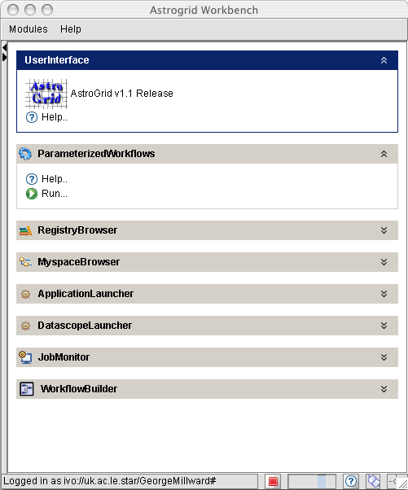
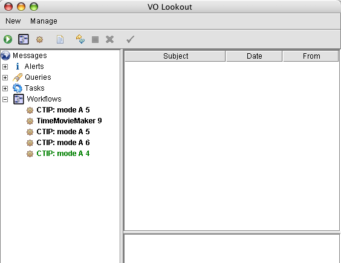

CTIP Mode A: Help
Summary
This Astrogrid science service allows a user to run the Coupled Thermosphere Ionosphere Plasmasphere model (CTIP) in a "steady state" mode by means of a simple interface. It is available via the Workbench or the Portal home page. Mode A accepts 2 input parameters: the Day Number (between 1 and 365) and the Solar Flux F10.7 (between 50 and 300, but might work for lower or higher values). Astrogrid then goes ahead and runs CTIP - returning the output data files to the users "myspace".
How to run CTIP in mode A:
In the AstroGrid Workbench, click on Parametrised Workflows and Run.

Type in your AstroGrid login details, then choose the "CTIP model - mode A" template workflow:
Input parameters
Mode A is a straightforward mode which runs CTIP in steady state as a function of the day number and the solar F10.7 flux.- Day number: an integer between 1 and 365
- F10.7: an integer between 50 and 300 (might work OK for lower or higher values)

Now click on OK. This submits the job for execution. You will be asked if you want to save the workflow document - answer either Yes or No to this.
Next, the VO lookout window opens:

While the job is running it is displayed in the Workflows list on the left in green text. Upon completion the text will change to black and Astrogrid will automatically save the output files to your Myspace area.
Running the CTIP model will create a "CTIP" subdirectory in your home directory in Myspace. This is where the output files will be located. To retrieve the files, click on Myspace browser in the Workbench. Click on the Refresh icon, then go into the "CTIP" directory, where you will be able to view the files and download them on your local computer.
The name of the output files will depend on your input parameters, e.g. for a CTIP run using the default parameters the output files will be:| File | Parameter | Units |
|---|---|---|
| CTIP_A_82_120MMM | Mean Molecular Mass | amu |
| CTIP_A_82_120O | Atomic Oxygen concentration | m-3 |
| CTIP_A_82_120O2 | Molecular Oxygen concentration | m-3 |
| CTIP_A_82_120N2 | Molecular Nitrogen concentration | m-3 |
| CTIP_A_82_120TN | Neutral Temperature | K |
| CTIP_A_82_120VNX | Southwards Wind Speed | ms-1 |
| CTIP_A_82_120VNY | Eastwards Wind Speed | ms-1 |
| CTIP_A_82_120VNZ | Upwards Wind Speed | ms-1 |
| CTIP_A_82_120HT | Height of the Pressure Level | km |
| CTIP_A_82_120NE | Electron Concentration | m-3 |
| CTIP_A_82_120LOG | a Log file showing details of the run |
Format of the Data:
Each of the datafiles produced is in ASCII form. The format of the data, for analysis using IDL etc., and example IDL routines are here:
Author: George Millward, george@apl.ucl.ac.uk
Last revised : 18 November 2005